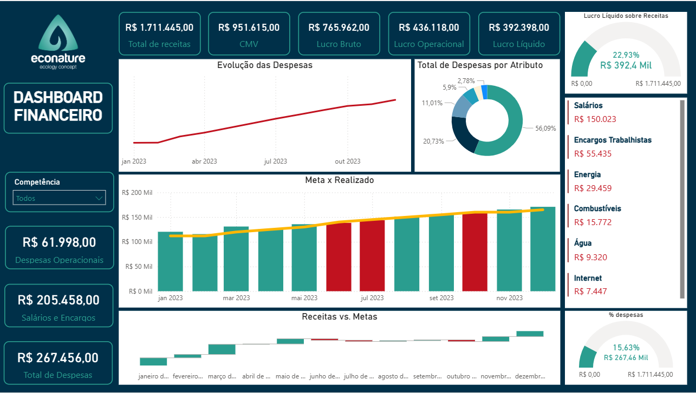

Transforme suas vendas em informações claras e rápidas. Envie seus dados e receba automaticamente um resumo completo com os principais números do seu negócio.

Nosso sistema foi feito para ser simples e rápido. Basta enviar suas informações de vendas, seja por planilha ou mensagem, e em poucos segundos nós analisamos tudo automaticamente para você. Em seguida, você recebe um relatório completo direto no WhatsApp, com os principais dados do seu negócio, como total vendido, produtos mais populares e desempenho por período. Sem complicação, sem precisar entender planilhas, apenas informações claras para te ajudar a tomar melhores decisões.